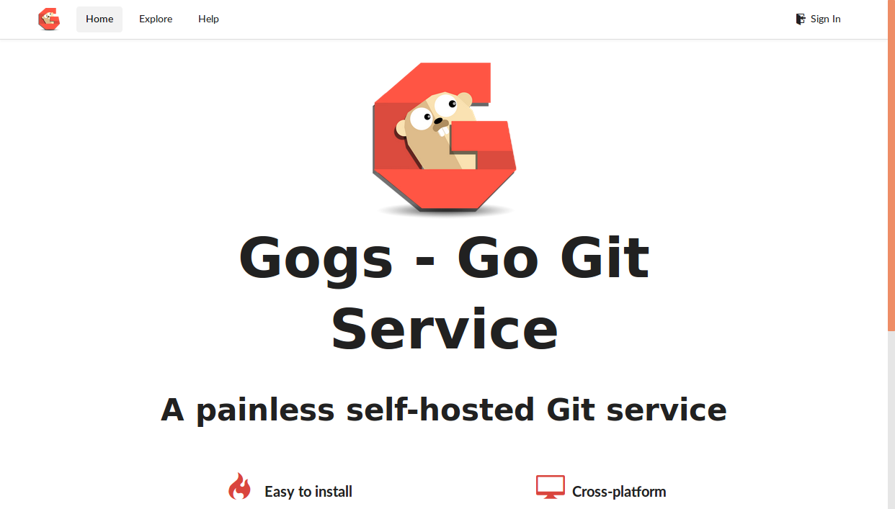

Use your own Git repository
I prefer complex systems over complicated systems therefore I create a lot of repositories. If you don't want to spam your GitHub account you can easily create an own GoGs repository.
Create folders for the persistence
The GoGs repository has persistent data therefore we've to mount this data somewhere. The easiest way to do that is over a node selector. A more advanced solution would be to use GlusterFS, Flocker, NFS or something similar.
If we use node selectors for our persistence then we've to log in to the server we want to persist the GoGs data.
ssh root@5.189.154.24
On the server we've to create the folder structure that gets mounted to the host.
mkdir -p gogs/data
Kubernetes deployment
To tell Kubernetes to schedule the GoGs repository pod on specified node we've to label the node:
kc label nodes vmi71992.contabo.host name=vmi71992
Next we create a deployment.yml file like this one.
apiVersion: extensions/v1beta1
kind: Deployment
metadata:
name: gogs
spec:
replicas: 1
template:
metadata:
labels:
name: gogs
spec:
containers:
- resources:
name: gogs
image: gogs/gogs:0.9.97
ports:
- name: gogs-port
containerPort: 3000
volumeMounts:
- mountPath: /data
name: data
volumes:
- name: data
hostPath:
path: /root/gogs/data
nodeSelector:
name: vmi71992
This file has to be deployed:
kc create -f deployment.yml
To test if the deployment is working you can display all pods:
kc get po
NAME READY STATUS RESTARTS AGE
registry-95525520-9rdvc 1/1 Running 0 1m
Kubernetes service
To make the repository visible outside the cluster we have to create a Kubernetes service.
The service.yml file can be created similar to this file.
apiVersion: v1
kind: Service
metadata:
name: gogs
labels:
name: gogs
spec:
ports:
- port: 3001
targetPort: 3000
nodePort: 30130
selector:
name: gogs
type: NodePort
To test the repository we can call the following url:
http://disruptor.ninja:30130
Disable register
After you have created your own user you better should disable the register button. Otherwise everybody from the internet can create new users and repositories. To disable registration you have to connect to into your Kubernetes pod. To find the correct pod use this command:
kc get po | grep gogs
gogs-2819519451-kmpgj 1/1 Running 0 1h
Now connect into the container inside this pod:
kc exec -it gogs-2819519451-kmpgj bash
And open the following file:
vi /data/gogs/conf/app.ini
Search for DISABLE_REGISTRATION set it to true and add
SHOW_REGISTRATION_BUTTON:
DISABLE_REGISTRATION = true
SHOW_REGISTRATION_BUTTON = false
Now kill the running pod. Kubernetes will reschedule the GoGs and start it with the new settings:
kc delete pod gogs-2819519451-kmpgj
After the restart there is no more register button on the upper right next to
Sign In.
